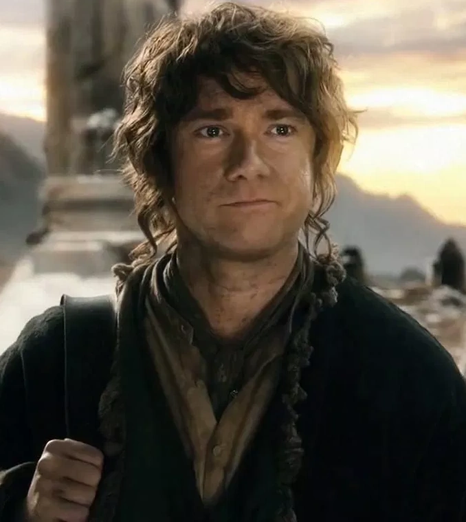
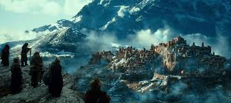
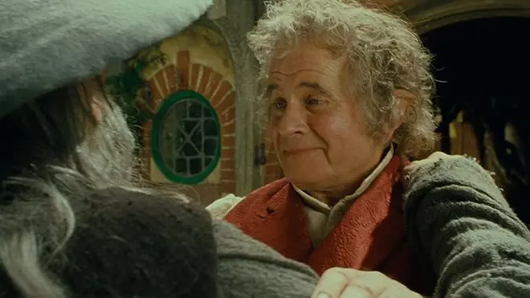
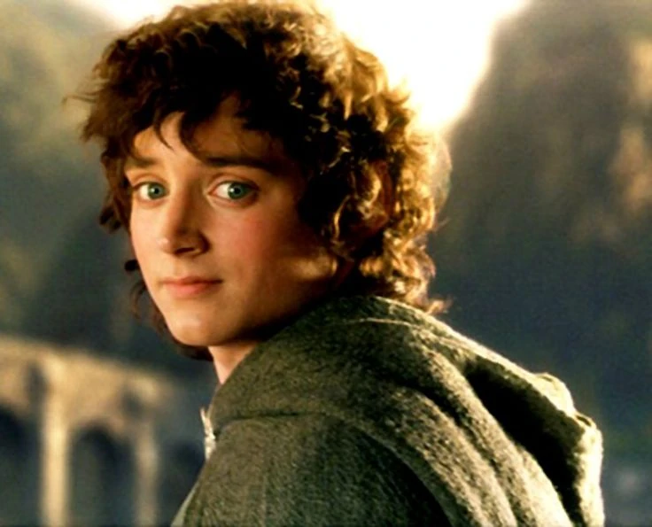
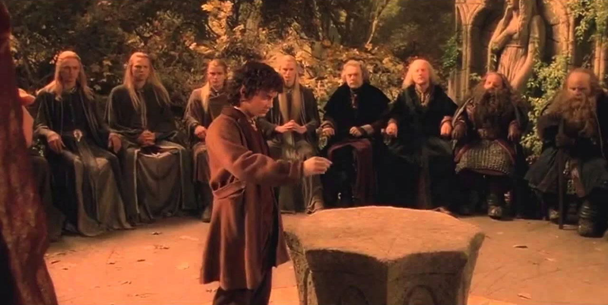
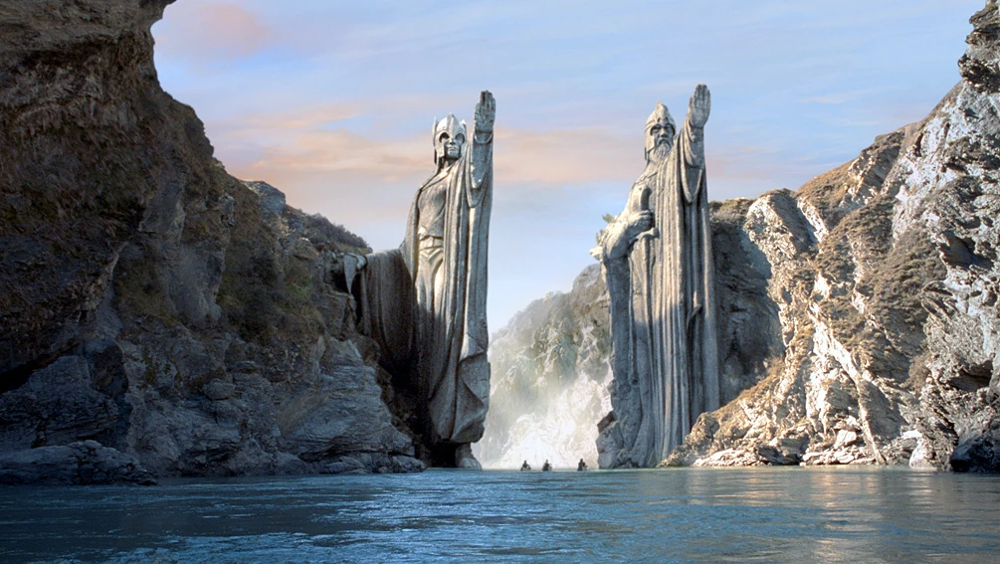
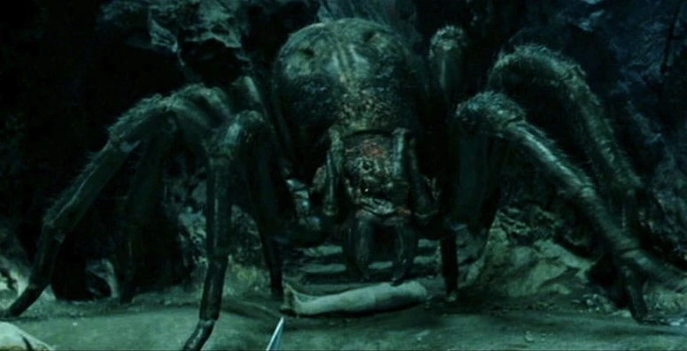
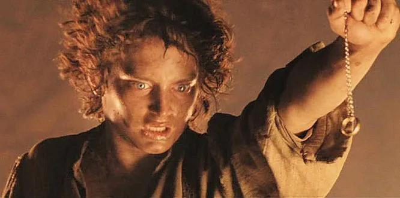
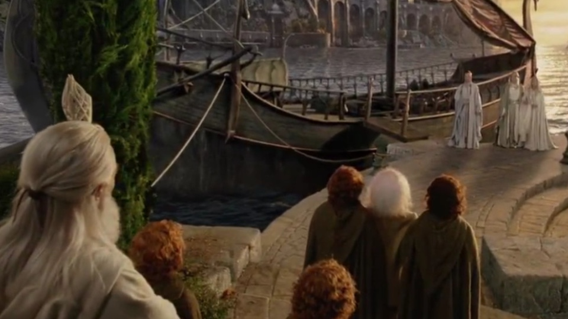

Bilbo Baggins:
Bilbo Baggins was a Hobbit of the Shire, the main protagonist of The Hobbit and a secondary character in The Lord of the Rings. He in 1.24 m tall. Bilbo Baggins was born on September 22 by Shire Reckoning (around September 12-14 of our calendar), in the year 2890 of the Third Age. He was the only son of Bungo Baggins and Belladonna Took.
In Hobbiton, Bungo Baggins constructed a spacious and luxurious Hobbit-hole for Belladonna, which they named Bag End. The family moved to their new home, where Bilbo would spend much of his life. As a young Hobbit, Bilbo was curious and eager for news of the outside world. The Istar wizard, Gandalf, took interest in this unusual quality in Bilbo during his visits to the Shire. Bilbo would later remember Gandalf's fireworks in the dwelling of his mother's family at Great Smials. Bilbo apparently practiced his rock-throwing skills in his youth so much, that birds and squirrels fled the area whenever he bent down to pick up a rock.
In the year TA 2941, Bilbo, at the age of 50, was visited by Gandalf, whom he had not seen for quite some time, outside his home at Bag End. Gandalf invited Bilbo on an unspecified adventure, which was flatly refused by the hobbit, who bade the wizard a "Good morning", and went inside. Undeterred, Gandalf continued in his plan, sending thirteen Dwarves, led by Thorin Oakenshield, to Bag End the very day. These Dwarves, needing an additional member for their company, initially came by pairs, and lastly with Gandalf, who had himself selected Bilbo as the best person for the Dwarves' job. The Dwarves explained to Bilbo their background and purpose; that they were among the Dwarves of Erebor who had been forced from the Lonely Mountain when the dragon Smaug attacked and taken up residence there. They now had determined to reclaim the mountain and needed a "burglar" to help them in situations requiring stealth. Bilbo reluctantly agreed to go, and the next morning they set off from the Green Dragon Inn.
Then they had many adventures until they reached Rivendell, the secret elf's valley where they discovered a secret message insidetheir map. Elrond found Moon-letters that spoke of the Side-door of Erebor, which read: Stand by the grey stone when the thrush knocks and the setting sun with the last light of Durin's Day will shine upon the keyhole. During their visit, Bilbo met Lord Elrond, and became enchanted with the Elves.
Bilbo and his companions then traveled from Rivendell and made their way to the High Pass of the Misty Mountains, where they witnessed the distant thunder-battle of giants. It was here the company, after taking shelter in what they took to be a simple cave, were captured by Goblins and taken to Goblin-town. With Gandalf's help, they escaped from the Great Goblin and his servants. Dori, however, who was carrying Bilbo, was grabbed from behind by a goblin, and in the ensuing struggle Bilbo lost consciousness and was inadvertently left by his companions.
Coming to and finding himself alone, Bilbo crawled his way through the pitch-black tunnel, using his hobbit nose to gain a sense of direction. He eventually stumbled upon a small Ring, but thought nothing of it, and put it in his back pocket. Although he did not know it, this lost trinket was the One Ring, forged by the Dark Lord Sauron thousands of years ago. Bilbo soon encountered Gollum, who had been in possession of the Ring for over five hundred years. The two challenged each other to a riddle-game with the condition that Gollum would show the way out if Bilbo won.
Bilbo won but Gollum tried to kill him with the help of the Ring. Realizing it was gone, he suspected that Bilbo had stolen It from him and chased him through the tunels without realizing he was behind him with the Ring on. This way, he lead him outside. Bilbo was soon reunited with his companions. Bilbo and the travelers had stopped for the night when orcs and a pack of Wargs found them near a patch of pine trees. The Dwarves, Bilbo, and Gandalf climbed up the trees to escape, but the orcs were not going to leave without killing them. They started to burn the trees down. The chief wolf was ordering the other wargs around when Gandalf picked up a pinecone, and with his magic set it ablaze in a green fire. He threw it down hitting the chieftain. It rolled around on the ground burning while Gandalf threw more and more pinecones down. The goblins and wargs fled and the group was rescued by the Great Eagles.
The group traveled to Beorn's house where they rested, after being gruffly taken in by Beorn and his animal servants. Beorn learned their story and gave a large number of provisions to help their quest. Beorn also lent several ponies to be used until the group reached Mirkwood. However, Beorn did not fully trust the Dwarves, so Bilbo saw Beorn giving careful watch to see that his ponies were unharmed. When the company arrived at the Forest Gate the ponies were let go (to several of the Dwarves discontent) and Gandalf left the group as well, warning them, "Do not stray off the path."
Inside the forest they tried to follow the path, but when the provisions ran out they went towards a fire and fell asleep. Then Bilbo discovered his companions were captured by great spiders. Bilbo was forced to find his lost companions and cut through the cocoons the spiders had formed around his companions. He distracted the spiders by improvising several insulting songs to irritate them, and succeeded when the creatures left their domain to find the intruder and eat him. Bilbo killed a few by throwing stones at them and by stabbing them with Sting. The spiders never found him, since during this time Bilbo made use of the Ring to remain invisible. After freeing the Dwarves, he led them into a charge against the spiders, where the company killed dozens of the arachnids.
They were then taken prisioners of the Elves, but Bilbo avoided it by using the Ring. Eventually Bilbo was able to rescue the Dwarves by stealing the chief of the guard's keys, and found a way for the company to escape the Woodland Realm by stowing away in a number of empty barrels, which periodically were taken by the Elves down the Forest River to Lake-town for trading purposes. The plan worked, and soon they all arrived at Lake-town, which they found to be a small town occupied by Men that Smaug would sometimes attack, though he had not been seen in many years.
Before long Thorin's company departed Lake-town, and crossing the river, followed Thrór's Map to the location of the Side-door before the end of Durin's Day. Upon discovering the keyhole, the door was opened and Bilbo was sent in alone in order to scout ahead and perhaps to steal some treasure from Smaug. When he arrived in the treasure chamber, however, Smaug was awake and sensed his presence, and so Bilbo put on the ring to avoid being seen.
Smaug, though unable to see the hobbit, tried to figure out who or what the intruder was, but Bilbo refused to tell the dragon his true identity, answering Smaug's questions only in riddles. While invisible, Bilbo noticed that Smaug had a bare spot on his jewel-encrusted underbelly. Finally, Bilbo removed the ring and Smaug saw that he had stolen a cup, causing him to go into a terrible rage. After Bilbo made it out of Smaug's lair safely, he convinced Thorin and the other Dwarves to enter the side-door and close it behind them, which saved their lives when Smaug left the mountain, and flying to the side-door, scorched the surrounding area. Foiled, the dragon flew off to Lake-town with the intent to destroy it once and for all.
Bilbo afterwards relayed to the Dwarves what he had learned, but a thrush, hearing the information, flew to Lake-town and told Bard, a descendant of the Men of Dale, of Smaug's weakness. On Smaug's arrival, Bard shot the Black Arrow at the bare spot, killing Smaug and sending him to rot at the bottom of the lake, but destroying most of Lake-town.
In the meantime, Thorin and company had reclaimed the Lonely Mountain, though Bilbo, having found the Arkenstone that Thorin greatly desired, kept it secret from the Dwarf. They were informed by Roäc, an old raven of the mountain, of Smaug's death in Lake-town, but quickly the Dwarves' mirth was dampened by the news that the surviving Men of Lake-town and the Elven-king's army were marching to the mountain to reclaim their wealth. Thorin, suspicious of the armies, refused to make any deal, with them at their arrival, and barricaded the mountain, thus beginning a siege.
Bilbo, hoping to avoid conflict, took the Arkenstone to Bard and Thranduil, in order for them to barter their share of the treasure with. Despite Bard and the Elvenking's offers for the hobbit to stay with them for the time being, Bilbo decided to return to the mountain. Thorin, on soon afterwards discovering Bilbo's perceived treachery, was furious and banished the hobbit from the mountain.
Bilbo stayed with Gandalf and Bard for a short time, until Dwarves from the Iron Hills, led by Dáin Ironfoot, arrived to aid Thorin's cause. However, shortly following this, a great army of goblins, led by Bolg, attacked, forcing the Dwarves, Elves, and Men to fight together to both defend the mountain and survive. This became known as the Battle of Five Armies, and though the goblins were defeated, Thorin and his nephews Fíli and Kíli were mortally wounded. Beorn, chieftain of the Beornings, who had joined the fight, slew Bolg along with his bodyguard and carried Thorin to safety. Bilbo only witnessed part of the battle, as he was rendered unconscious early on, and wearing the ring, lay undiscovered until he came to following the battle's conclusion. Thorin praised Bilbo and apologized to him for cursing him earlier, and thereafter passed away.
After Thorin's funeral, the new king Dáin II offered him his one-fourteenth share of the treasure, but Bilbo declined, receiving only two small chests, one with gold, and the other laden with silver. He then traveled back with Gandalf to the Shire. They dug up some of the buried treasure the Dwarves had buried earlier, most of which Bilbo offered to Gandalf to use to aid the peoples of Middle-earth. When they at last came to the borders of the Shire, the two parted, with Gandalf going his own way.
Although Bilbo returned safely to Bag End with his reward and lived in relative comfort, Bilbo’s life was not quite the same as it had once been. His sudden return after having been thought dead lost him some of the neighbors’ respect and he was later thought of as an oddity, and there were many talks and false rumors circulated about his affairs and doings.
Bilbo was very generous with his money and most people were willing to forgive him for his oddities. He had many friends especially amongst the Gamgees whom he consulted frequently on landscaping and on the growing of vegetables. His good friend the Gaffer even allowed him to tutor his son Samwise Gamgee. Bilbo taught him to read and write, and at some point taught him various bits of poetry and told him tales of the elder days. Yet, he slowly began to become weary of his settled and sheltered life at Bag End.
Bilbo was the bearer of the One Ring for six decades, ignorant of its significance. However, by TA 3001, the Ring had begun to affect him. He did not appear to have aged at all, although he felt older and thin inside. He decided that he wanted to partake in one more adventure before he found a place to settle down and finish his account of the Quest for the Lonely Mountain.
On September 22, a farewell Birthday Party was held in his honor, where he announced his intention to leave the Shire, to the shock of his family and friends. Immediately afterward, he put on his Ring and disappeared, as a joke on his neighbors. He returned to his house where he was confronted by his friend Gandalf, who tried to persuade him to leave the Ring for Frodo. After a discusion he finally left It behind becoming the first Ring-bearer to give up the ring of his own will.
Between TA 3003 and TA 3018, Bilbo worked on the written account of his adventures, in a book that would later be known as the Red Book of Westmarch. On September 22, 3021, Bilbo turned 131 and became the oldest hobbit ever to have lived. Since Bilbo had been a ring-bearer, he was allowed to accompany Frodo to the Undying Lands. On September 29, he, Gandalf, Elrond, Galadriel, and Frodo boarded a ship docked at the Grey Havens and sailed away from Middle-earth. His fate afterward is not known but as he too was a mortal being, he most likely died in the light of the Blessed Realm of Valinor.
Frodo Baggins:
Frodo Baggins, son of Drogo Baggins, was a hobbit of the Shire in the late Third Age. He is 1.24 m tall. Much of Frodo's youth was spent at Brandy Hall in Buckland, the ancestral home of the Brandybuck family, including his mother (Primula Brandybuck). Frodo was known as something of a rascal, befriending Meriadoc (Merry) Brandybuck and Peregrin (Pippin) Took and causing trouble wherever they went. They would often steal mushrooms from Farmer Maggot's farm Bamfurlong.
In TA 2980, when Frodo was only 12 years old, his parents drowned in a boating accident on the Brandywine River. An only child, Frodo stayed in Brandy Hall until his 99-year-old "uncle" Bilbo, his father's second cousin, adopted him in TA 2989. Bilbo took Frodo to live with him in his home at Bag End and made him his heir. The two grew very close in the following years; Frodo, treated by his adopted guardian as he were his own son, learned much of the Elvish language during his time with Bilbo, as well as much of the lore of Middle-earth. They also had a weekly tradition of taking long walking trips together from Hobbiton to Michel Delving and Buckland; all throughout the Shire. The two shared the same birthday.
Before departing for his journey to Rivendell, Bilbo was persuaded by Gandalf to voluntarily surrender the One Ring. Bilbo left it on the fireplace mantel with a note for Frodo, who would now become the next Ring-bearer.
Gandalf advised the young hobbit against the using the Ring. For the next seventeen years, Frodo complied with the wizard's request and hid the Ring in a safe place. However, on April 12, 3018, Gandalf returned to Bag End and warned Frodo that the Ring was actually the One Ring, which the Dark Lord Sauron needed to rule over Middle-earth. Realizing that Sauron would be looking for the Ring, Gandalf advised the Hobbit to secretly follow Bilbo's journey to Rivendell.
Merry helped Frodo to purchase a small house at Crickhollow. With the exception of his gardener Sam Gamgee, who had agreed to accompany him to Rivendell, Frodo told the other Hobbits of the Shire that he intended to move to Buckland.Frodo left from Bag End, taking with him Sam and Pippin. They left in the early morning for Bree, and just in time, as Sauron's most powerful servants, the nine Nazgûl, had entered the Shire dressed as Black Riders searching for a hobbit with the name of Baggins.
After many adventures together including their encounter with Tom Bombadil, the arrived to Bree. In Bree, the hobbits stayed at The Prancing Pony, an old inn. Frodo went by the name of Mr Underhill, attempting to raise as little suspicion as possible. When he noticed a mysteriously cloaked Man sitting in the shadows and smoking a long-stemmed pipe, Frodo asked the innkeeper, Barliman Butterbur, who the man was. The innkeeper referred to the man, a Ranger, as Strider. That night, Black Riders arrived in Bree and attacked the inn in search of Frodo and the One Ring, but Strider had managed to hide the Hobbits from them in time. Having gained their trust, Strider introduced himself as Aragorn to Frodo and the others, to whom he also revealed the backstory of the black riders, also called Nazgûl or Ringwraiths. With a pony named Bill that the Hobbits had acquired at Bree, Strider led Frodo and his companions into the Wild. Aragorn would be their guide to Rivendell, and he would lead them through the Midgewater Marshes and to the hill of Weathertop.
On the night of October the sixth, the Hobbits were attacked by five of the nine Ringwraiths at Weathertop. In the presence of the Nazgûl, Frodo made the mistake of putting on the Ring. He was able to resist their attempt to take him by drawing his sword and invoking the name of one of the Valar, Elbereth Gilthoniel. Unfortunately, the leader of the Nazgûl, the Witch-king of Angmar, stabbed Frodo in the shoulder (he would have stabbed his heart) with a Morgul-knife. If it had caught him in the heart, Frodo would have become like the Nazgûl, only weaker and under their control. The Ringwraiths were driven away by the appearance of Aragorn and his martial skill; also because he had torches, one of their few weaknesses.
A fragment of the Ringwraith's blade remained in Frodo's flesh, where it continued to move towards his heart. Near death (or worse), Frodo was rescued by Glorfindel, an Elf-lord, who put the injured Hobbit upon his horse Asfaloth. They were found and pursued by the Nazgûl, as Glorfindel rode and bore Frodo swiftly to the Ford of Bruinen, at the entrance to the valley of Rivendell. Once they had crossed the River Bruinen, the Nine Ringwraiths behind them demanded Frodo give up the Ring, but Frodo refused. Subsequently, the Ringwraiths entered the river and were washed away in a flood called up by Elrond.
Frodo was soon healed in Rivendell by Elrond, who knew the wound would not ultimately leave him, as it was both spiritual and physical. On the 24th of October 3018, Frodo awoke in Rivendell and was reunited with Bilbo, Gandalf, Aragorn, Sam, Merry, and Pippin. Although Elrond had healed his wound, it continued to ail him yearly for as long as he lived in Middle-earth.
After his healing, Frodo was summoned to a great Council that Elrond had organized. Representatives of all the Free Peoples of Middle-earth discussed the history of the Rings of Power and decided that the One Ring must be destroyed. As the Ring was shown and tempers flared, argument broke out as to who should carry the Ring on this mission, until Frodo bravely volunteered to take the Ring to Mordor and cast it into the fires of Mount Doom. A member of each of the Free Peoples offered to join Frodo in his quest, thus forming the Fellowship of the Ring. The Fellowship consisted of Frodo, Samwise, Merry, Pippin, Aragorn, Gandalf, Boromir of Gondor, Legolas of the Woodland Realm, and Gimli of the Lonely Mountain.
Before leaving Rivendell, Bilbo gave Frodo his dwarf-made coat of mithril mail and his elven blade Sting. The mithril coat had been given to Bilbo by Thorin Oakenshield during the events of The Hobbit, and Sting had been taken by Bilbo from a troll den. On December 25, the Fellowship of the Ring departed from Rivendell and headed south.
After an attack by White Wolves in Eregion, on January 11, 3019, the Fellowship attempted to cross the Misty Mountains (specifically the Pass of Caradhras), but were unable to due to a snowstorm. They instead traveled through the underground city of Moria at the urging of Gimli. After solving the riddle to enter, they continued their path, but were attacked by orcs, goblins and a cave troll. Frodo was stabed but the mithril coat saved him. They then run to the bridge of Khazad-dum, in which Gandalf fell fighting the Balrog.
Deeply grieved by their loss, the Fellowship journeyed to the Elven kingdom of Lothlórien, where they met the Lady Galadriel and Lord Celeborn. Galadriel showed Frodo a vision of the future in her Mirror. Frodo offered her the One Ring, but she resisted the temptation to take it, passing the test that was laid before her, and accepting the diminishing of the power of the Elves. Before the Fellowship departed from Lothlórien, Galadriel gave each member a gift. To Frodo, she gave a phial with the light of the star Eärendil captured inside; this gift would prove hugely important later on in the quest. They were also provided with elven way-bread, other supplies, and boats for their voyage down the Anduin River.
The Fellowship continued their journey south to Parth Galen. There, Boromir, a Man of Gondor and a member of the Fellowship, attempted to convince Frodo to bring the Ring to Minas Tirith and regroup from there. When the hobbit asked for an hour alone to consider his options, Boromir followed him. Seeing that Frodo did not intend to take the suggested course of action, Boromir tried to take the Ring from him by force. Frodo scaped putting on the Ring.
Taking off the Ring, he decided to take the item to Mordor alone, without telling the other members of the Fellowship. However, he was joined by his friend Samwise Gamgee, who felt it was necessary that he should protect and guide Frodo. Frodo gave in to Sam's protests, and although reluctant to lead anyone else to his fate, was glad to have Sam's company.
The two hobbits continued toward Mordor, dividing the Fellowship. After leaving what remained of the Fellowship at Amon Hen, Frodo and Sam tried to navigate through the winding paths and razor sharp rocks of the Emyn Muil. After getting lost several times, they were found by Gollum, who at first tried to take the One Ring, but was captured by Sam (with Frodo's help) and tied up with the Elven rope. Frodo, now pitying the creature, decided not to slay Gollum, but forced him to swear an oath of servitude to the master of the precious. Gollum then led them out of the maze and into the Dead Marshes.
Gollum led Frodo and Sam on a safe pathway through the marshes, warning them not to follow what seemed like small torches in the water. Gollum led the two Hobbits to the Black Gate of Mordor, as Frodo had desired, but stopped the Hobbits from passing its doors, as the danger was too great. He then explained about a secret way into Mordor, 'Up the stairs and through the tunnel'. The Hobbits once again found themselves being led by Gollum.
After venturing into Ithilien, and witnessing a skirmish between a company of Haradrim warriors (along with Oliphaunts) and Rangers from Gondor, they were apprehended by the Ranger's captain, Faramir. When the skirmish had ended, Faramir blindfolded the ring-bearer and his companions and led them to Henneth Annûn, the Window on the West. Upon much interrogation, Sam foolishly misspoke, and gave away that Frodo was indeed carrying the One Ring. Realizing the importance of the quest, Faramir proved his quality, unlike his brother, Boromir, and let the Ring-bearer go free, resupplying the hobbits with food for their journey. Later, Gollum was captured in the Forbidden Pool and forcibly taken into the hidden lair. Frodo begged for his safety, and he was not killed, although the rift between master and servant had once again begun to open.
Gollum led the hobbits past the lair of the Witch-king of Angmar, Minas Morgul, and up the Stairs of Cirith Ungol into 'The Tunnel'. When they arrived at the top though, they were abandoned by Gollum. They cautiously traveled through the tunnel, and managed to get to the end only to find their way barred by Shelob's great web. Whilst attempting to cut through the webbing, Frodo bravely stood up to Shelob and forced her back further into the tunnels giving him and Sam time enough to hack through the threads and escape. Upon escaping the tunnels, Frodo thought himself safe; however, Shelob, through one of her many tunnels, managed to sneak out and jab him with her stinger.
As he was being encased in Shelob's webbing, Sam was able to draw her into single combat wherein he, using Sting and the Phial of Galadriel, was able to mortally wound her and drive her back into her caves. Sam took the Ring from around Frodo's neck upon hearing Orcish voices, and hid behind some nearby rocks. He overheard the Orcs speaking of Frodo, and Sam realized that his master was not dead, but merely paralyzed. Frodo was then taken to the Tower of Cirith Ungol to await further torture and questioning.
Frodo was taken to the utmost top of the tower and imprisoned. He was stripped of all his clothes and all the things he carried. Squabbling over his mithril vest, fighting broke out amongst the two lead Orcs and their battalions, killing almost all the Orcs and Uruks in the tower. Sam rescued Frodo and they entered Mordor.
Frodo and Sam crawled onward through the empty plains of Mordor, as the Orcs had been sent to the Black Gate to stop the Men of the West's army, and, after falling in and out of a company of Orcs, started to climb Mount Doom. They journeyed on for many days with hardly any food or water, and Frodo became progressively weaker as the Ring's power over him grew the closer they came to Orodruin. Frodo was eventually unable to go on, and Sam was forced to carry him a fair distance while his master rested upon his back. It was then that Gollum reappeared, and after a brief struggle, Sam cut Gollum in the stomach, and Frodo fled up the mountain.
Inside the Cracks of Doom, Frodo finally had the chance to destroy the Ring, and rid himself of his burden, but the power of the Ring was at its strongest due to it being in the place of it's making. It was here that Frodo finally yielded to the temptation and power of the Ring. Sam yelled for Frodo to destroy the Ring, but Frodo was overcome by its power and claimed the Ring for himself. Gollum attacked Sam, who fell and hit his head on a rock, temporarily knocking him unconscious. When he came to he saw Gollum fighting with an unseen foe (Frodo, having put on the Ring). Then Gollum bit off Frodo's finger, Ring and all, and was reunited with his treasure for a short time, until dancing with joy he toppled off the brink and fell into the depths, destroying himself and the One Ring.
The two hobbits tried to escape as the volcano erupted. Just as it looked as though they were doomed, Gwaihir the Lord of Eagles saw them, and with his Eagle companions Landroval and Meneldor rescued Sam and Frodo and flew them to safety.
After recovering at the Field of Cormallen and witnessing the crowning of Aragorn as King Elessar, Frodo, Sam, Merry, and Pippin all returned to the Shire. In the films they lived happily, but in the books they discovered it under the control of an individual named Sharkey (later revealed to be Saruman) and his forces. They had to overtrow him.
Following the Scouring of the Shire and end of the War of the Ring in November, Frodo went on to serve as Deputy Mayor of the Shire. During his brief tenure of six months, he helped lead the rebuilding of the Shire, but soon realized that he still bore the wounds of his quest. On May 1st, TA 3020, Frodo attended the wedding of his best friend Sam and his wife Rosie Cotton and they moved in with him at Bag End. On mid-years day later that year, Frodo retired from his post as Deputy Mayor, letting the office revert to Will Whitfoot, who Frodo held place for as he recovered from his wounds and imprisonment by Saruman.
Frodo also wrote his own story "The Lord of the Rings" along with Bilbo's "There and Back Again" in the Red Book of Westmarch. On 29 September TA 3021 (Third Age), at the age of 53, Frodo joined Bilbo, Gandalf, Elrond and Galadriel aboard an Elven ship. He was allowed passage across the sea to the Undying Lands, as he was a Ring-bearer, with the hope of healing the damage to his spirit that bearing the Ring had caused.